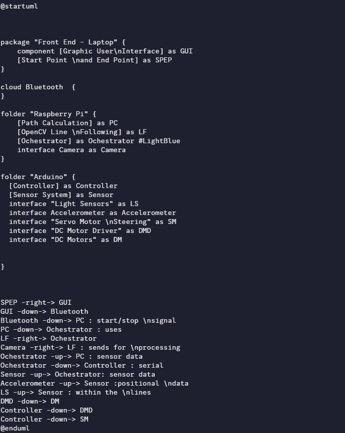

Project Overview & Goal
The objective of the Hospital Courier Robot project was to design and prototype an autonomous system for transporting small medical supplies between hospital wings, thereby increasing staff efficiency and reducing delivery times. This mechatronic solution combines custom mechanical design, embedded control, and computer vision into a single, functional prototype that navigates using floor lines.

Image: The Line Following Robot Navigating a Sample Track.
Technical Implementation & Components
The system was built around several key hardware and software components, demonstrating competence in integrating diverse technologies:
- Embedded Control (Raspberry Pi): The core control unit was an Raspberry Pi microcontroller, responsible for translating the navigation decisions into precise motor control signals (PWM) to maintain line-following accuracy.
- Computer Vision (Webcam): A lightweight webcam was mounted to capture the floor path. The video stream was processed on a separate unit (e.g., Raspberry Pi or laptop) using Python/OpenCV to identify the line's position and orientation, feeding error data back to the Pi.
- Mechanical Design (3D Printed Chassis):strong> The robot's body was a custom, optimized 3D-printed chassisstrong> designed in SolidWorks. The design prioritized component mounting, battery management, and a low center of gravity for stable movement within the hospital environment.

Image: Sample of the Code Used in The Project